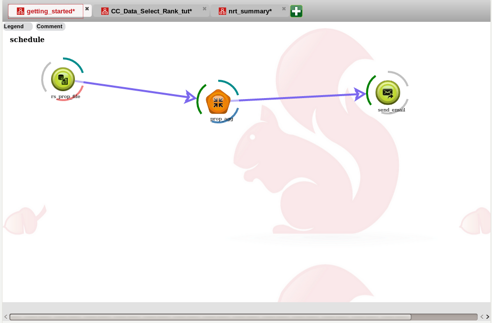

The canvas is a graphic representation of a workflow and displays various stages of the workflow, thus enabling the user to create a workflow with the right steps and at the right stage. The canvas is used to manage jobs, processes or flows. Canvas enables the user to manage jobs and lets the user manage each aspect of the job by modifying the required parameters.
The actions footer is the toolbox used for building workflows. Workflows are composed of one or several actions dragged from the footer.The footer is organized in tabs, so the user can find the tool they need more easily. Tabs include one or several actions and an action can be included in several tabs. Tabs can be generated automatically and be modified at any time by the user.
The user can view different aspects of Red Sqirl such as Hadoop File System, Remote File System, Help, Process manager, Error, Hadoop File System, Jdbc and HCatalog, accessible by clicking the red drop down arrow next the Help, Canvases, or by creating a new section by dragging a splitter down.
Red Sqirl is an analysis platform that runs in parallel with the Hadoop platform and other Hadoop Technologies. The main technologies for storage are Hive and HDFS. Hadoop is an open-source software framework used for distributed storage and processing of big data sets.
Spark, Hive and Pig are used for data manipulation. These technologies can be used for data queries and and for filtering. HCatalog and HDFS are used for data storage. Oozie manages the workflows to run jobs in parallel. These jobs can be saved and used again in the future. Saved jobs can be opened and modified to be run with different parameters. The output of these jobs will be saved to appropriate storage facility (HCatalog or HDFS).